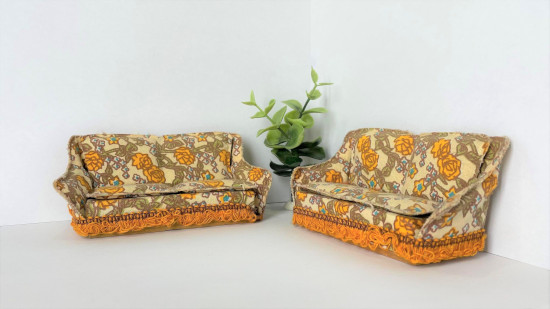
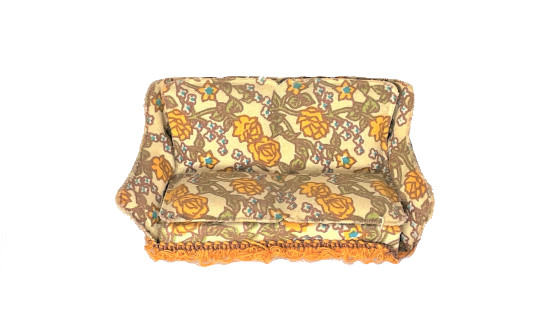
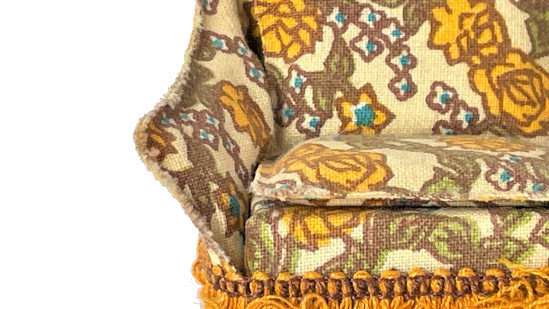
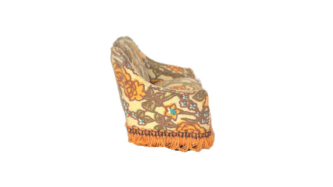
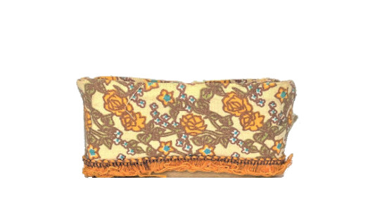
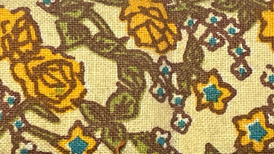

The Flowery Series






Flowery Couch 2-seater
This lovely couch is part of a series, the Flowery Series. It comes in different sizes so it is easy for you to decorate your living space like you want to.
This pattern is very popular, it is made in wowen fabric, and it is resiliant against stains. It is easy to clean.
Price: $129,-
Product Information
All items in this series are light-weight, so you can easily moved them around. The quality hasn't suffered from this, and these are made to last a long time.
Available Sizes:
- - 2-seater
- - 3-seater
- - Lounge Chair
Assembly Instruction
The items in this series come ready-to-use. No need for any assembling.